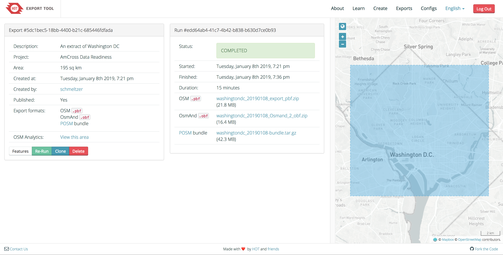

Preparing for mapping¶
Todo
This section is being edited and updated. Please let us know if you find any errors or omissions.
Now you have a POSM. The device has all the core software ready to go, and the next step is to create a “deployment” - this means downloading all the OpenStreetMap data and other resources for your area of interest (AOI). You should do this in an area with a stable internet connection - if you are traveling for fieldwork, we highly recommend doing this before you leave. POSM can handle relatively large deployments (entire districts and sometimes countries).
Creating an AOI deployment¶
POSM Export Tool¶
On your computer, when connected to the internet, navigate in your browser to the POSM Export Tool. This site will allow you to select a geographic area and extract the OSM-related data you need for it. First, log in with your OpenStreetMap credentials. Navigate to the “Create” option listed in the navigation toolbar at the top of the page.
1 Describe¶
The first tab is labeled “1 Describe”. Complete the Name, Description, and Project fields with text related to your project. In the “Name” field avoid spaces and long descriptions. This will be the name of your final download file. You can set the area by searching for a place, by geographic coordinates, or by zooming in on the map. You can use the tools in the panel to draw your project area of interest freehand, with a box tool, selecting the entire area in view, or by importing a geospatial boundary file.

2 Formats¶
Once you’ve completed this section click on “2 Formats” in the navigation menu or “next” at the bottom of the page.
This tool was designed to enable a variety of mapping analysis and data uses, so you won’t need to check all the boxes - all that’s required for POSM is the OSM. and the OSMAnd.obf files. But just in case, here’s a run-down of what your options are and what you might use them for if you do want extra data available offline:
- Esri SHP (OSM Schema): Standard shapefile used by most GIS applications. This extracts all OSM data into three shapefiles (point, line, and polygon)
- Esri SHP (Thematic Schema): Standard shapefile used by most GIS applications. This extracts the OSM data into many shapefiles (e.g. waterways, buildings, health/schools, residential landuse areas, airports, amenity points, etc). This is probably more useful if you are building a base map or need basic GIS data layers for the area.
- GeoPackage: OSM data for working with in a database format
- Garmin Image: For loading onto GPS devices
- Google Earth KML: For loading into Google Earth. Often used for tracks.
- MBTiles: Background map tiles for offline use. Extracting these will allow you
to host offline mapathons with the HOT tasking manager. Check this box and
enter the Bing API when prompted:
https://ecn.t2.tiles.virtualearth.net/tiles/a{q}.jpeg?g=587&mkt=en-gb&n=z. Make sure the{q}copies and pastes properly - it sometimes gets replaced with other characters. Once you’ve pasted the link, you’ll also need to set the minimum and maximum zoom levels; we recommend 13 to 20. Note: These MBTiles aren’t an effective substitute for the tiles needed in the OpenMapKit app; you will still generate these using POSM.
- OSMAnd OBF: For loading onto the OsmAnd offline map app for Android phones. This app is really useful for offline navigation and wayfinding during fieldwork.
- OSM PBF: This is the core OSM data package. This is anabsolute requirement for POSM.
- MAPS.ME:
Todo
Note above about MBTiles needs to be confirmed as still applicable (or not). Also, add description for MAPS.ME file.
POSM will be creating a bundle to automatically include all the data for OpenMapKit (OMK) functionality, mainly an OSM data file and MBTiles. Once you have selected the two options, click the “3 Data” option in the navigation toolbar or select “next” at the bottom of the page.
3 Data¶
The “3 Data” tab allows a user to select the type of OSM tags to extract for the project under the “Tag Tree” option. For a POSM bundle you can select all features; the export will configure the file an appropriate data file. If you want to explore the types of tags in each category you can select the arrow next to each label to expand the list. Once you have selected all of the options click “4 Summary” in the navigation menu or select “next” at the bottom of the page.
The “4 Summary” tab will display a brief overview. DO NOT FORGET to select the option “Bundle for POSM” option. You can either choose to publish or keep your export private. Once you’ve checked your selections, select “Create Export”.
Conclusion¶
This can take some time depending on the size of your AOI- you’ll get an email when it is complete and an option to download on the webpage. You can download the individual components or the whole bundle. Keep this webpage open - the easiest way to get the export onto the POSM is by looking for the “POSM Bundle” download, right-clicking that, and copying the link. You will use this link to download the bundle directly onto the POSM.
Getting the AOI onto the POSM¶
Direct download¶
Plug the POSM into an ethernet connection and power it up. POSM will broadcast a local wifi network named POSM. The default password is awesomeposm (you can change both the name and the password in the admin console, see Accessing admin settings).
Use your computer to connect to the POSM wifi. In your browser, navigate to
posm.io (any http:// website will also redirect to posm.io).
In your browser now type http://posm.io/posm/settings. Under Wi-FI click the button next to “Bridged” and select Apply to have your POSM allow your computer to gain access to the POSM and the internet. Do not change any other settings at this time.
On the side panel select “AOIs”. Under the section labeled “Active AOI” select the Other option, right click, and paste the URL you copied earlier for the “POSM Bundle” link(it will end with .tar.gz. Click “Activate”. You can select the “Show Logs” button on the top right to confirm it is running. Behind the scenes, POSM is downloading the OSM data and setting it up for use. This can take some time.

When the POSM extract is ready, you can unplug the ethernet cable - POSM has everything it needs to go offline.
Manual copying¶
If you do not have access to an ethernet cable you can transfer a POSM bundle from your computer over the POSM wifi via command line.
Locate your POSM Bundle export. If you closed the browser with your export information you can check your email for the link or go to https://export.posm.io and select “exports” and search for your file name. Save the file on your desktop.
Connect to your POSM wifi. Open terminal and navigate to your desktop, which can be done typing cd ~/Desktop (on OSX) in a terminal window and pressing enter. Next type scp bundle-name.tar.gz root@posm.io:/opt//posm-www where “bundle name” is the name of your saved POSM Bundle file. The default password is posm.
Return to your web browser and type http://posm.io. From the side navigation bar select “AOIs” and in the space under the Active AOI section type http://posm.io/bundle-name.tar.gz . Make sure to change the “bundle-name” to the actual name of your bundle file from earlier and select Activate.
Sometimes you will receive an error. Don’t worry! You can fix this.

(On OSX) From your desktop locate the main navigation bar usually found on the top of the screen. Select “Finder”, then “GO”, and choose the option “Go to Folder”. Now type ~/.ssh
Open the known_hosts file using a text editor, such as Atom. Delete all of the lines that show up in that file. Save and exit.
Creating MBTiles¶
POSM Field Papers process¶
There’s one last thing you need to do to set up POSM. Go back to the posm.io homepage, and click on the FieldPapers link. You need to create a FieldPapers atlas for the area you’re working in - this triggers the creation of MBTiles, which are needed for an OMK deployment. These are the zoomable map tiles in the background of the OpenMapKit app; the OSM data sits on top of this as interactive buildings, roads, etc. It can take a couple of hours to create the MB tiles, but this can run in the background as long as POSM is plugged in and powered up.

Note: if you are doing repeat cycles of mapping, then every time you make OSM edits using OMK, iD, JOSM, etc, you will need to re-run the FieldPapers atlas in order to create updated MB tiles for your area. This means that your second and third round of mapping will build off previous changes.
MBTiles generated with Node.js¶
To create a custom MBTiles archive containing Bing imagery for your area of interest, follow the following steps on a computer connected to the internet.
Installed Node.js. On Linux or OSX we recommend using Node Version Manager. Note: This process is tested for Node v7.3.0 and may work with newer versions of node but we haven’t checked.
Initialization:
mkdir /tmp/mbtiles
cd /tmp/mbtiles
npm install tl tilelive tilejson tilelive-http mbtiles tessera
Create the MBTiles archive using a zoom range (1-5 in the example below but you’ll want to use a higher zoom range) and bounding box (minX/lng minY/lat maxX/lng maxY/lat; http://bboxfinder.com/ is useful for this). The larger the zoom range and bounding box are, the larger the MBTiles archive will be (and the longer it will take to produce it). (The URL template provided here is the same imagery that Bing makes available for use with the iD editor on OpenStreetMap.org.)
node_modules/.bin/tl copy -z 1 -Z 5 -b "-109.940186 38.406254 -107.561646 39.766325" "http://ecn.t0.tiles.virtualearth.net/tiles/a%7Bq%7D.jpeg?g=587&mkt=en-us&n=z" mbtiles://./bing2.mbtiles
To preview the MBTiles locally, run tessera and open http://localhost:8080/ in a web browser. Hit control-c to quit.
node_modules/.bin/tessera mbtiles://./bing.mbtiles
To copy the MBTiles archive to a POSM device, connect to the POSM wireless and run (if the POSM is connected to the same wired network you are, use posm.local instead of posm.io):
scp bing.mbtiles root@posm.local:
Once the MBTiles archive has been copied to the POSM, move it into place and make it available for use with iD, etc.:
ssh root@posm.io
mkdir /opt/data/tiles
mv bing.mbtiles /opt/data/tiles
cat << EOF > /etc/tessera.conf.d/bing.json
{
"/tiles/bing": "mbtiles:///opt/data/tiles/bing.mbtiles"
}
EOF
service tessera restart
Tiles should now be available using the URL template http://posm.io/tiles/bing/{z}/{x}/{y}.png. You can browse them directly via http://posm.io/tiles/bing/.
To add them as a custom background to iD, open the background menu and add some custom imagery using the URL template http://posm.io/tiles/bing/{z}/{x}/{y}.png.
What next?¶
This set-up procedure includes everything that must be done with an internet connection. Everything else can be run offline, but we highly suggest testing the entire workflow before going to the field to allow time for troubleshooting.